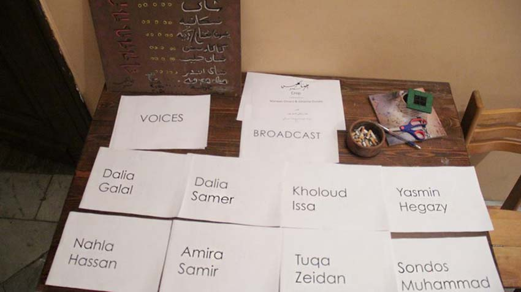
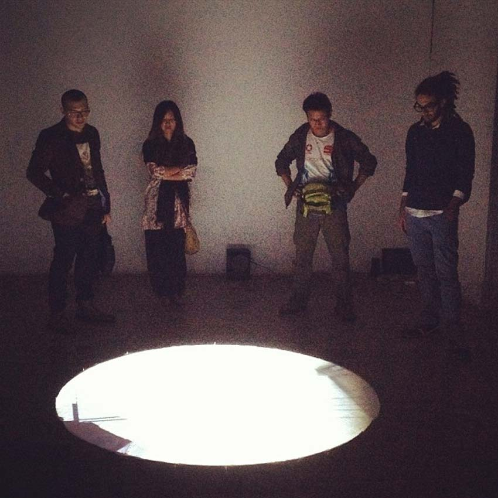
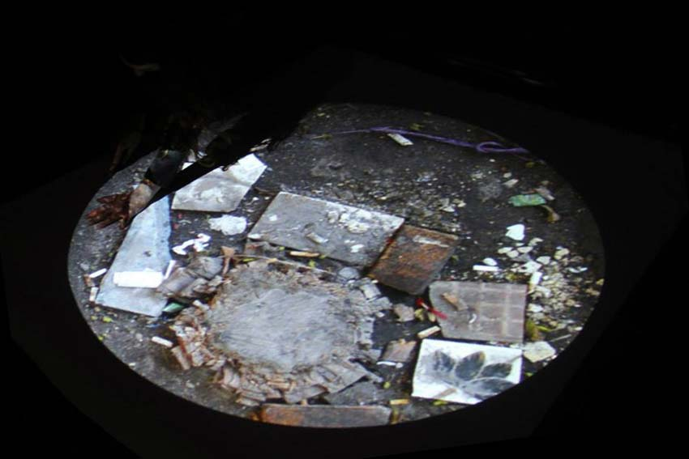
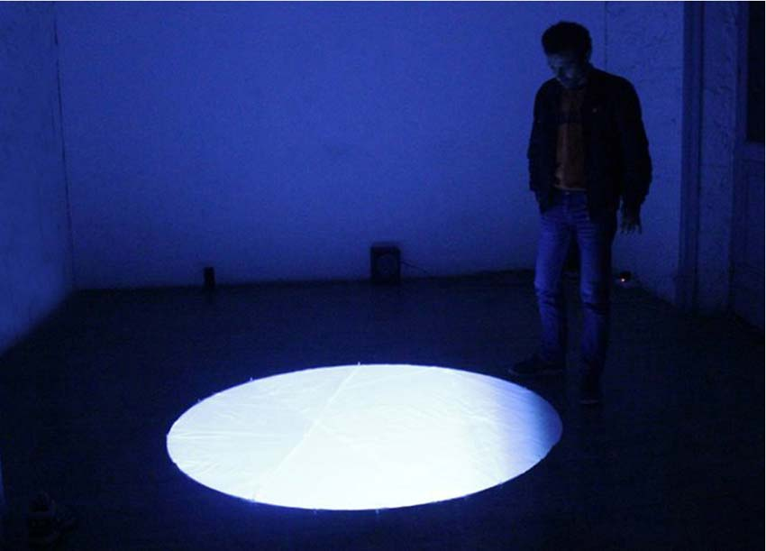

Jessica Arseneau
::: portfolio




Here's one excerpt of the video and the sound together. Considering that the audio is 10 minutes and the video is 7 minutes, this is one possible combination.
Walking A Cappella
2014
With Dalia Galal, Nahla Hassan, Yasmine Hegazy, Kholoud Issa, Sondos Muhammad, Dalia Samer, Amira Samir and Tuqa Zeidan
Audiovisual installation
Audio 00:10:00 loop
Video 00:07:00 loop
Walking A Cappella is an audiovisual installation with a soundscape of feminine voices and a circular video projection on the floor.
The orchestration of the recordings reveals melodies that are part of the cultural field that frames the atmosphere of West Asia and North Africa. With the layering and the repetition of the sounds, the composition makes a socio-polical shout deployed by singing women. While the sound plays for ten minutes on a loop, the video repeats itself after seven minutes, making asynchronous combinations that recall to a disrupted situation, an echo to the Egyptian Revolution of 2011. The video shows images in Alexandria, among others, ruins of an old theater.
This work have been made during a residency program at ElMadina for Performing and Digital Arts, Alexandria, 2014.
Thanks to Conseil des arts et des lettres du Québec for their financial support